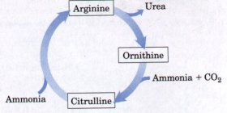
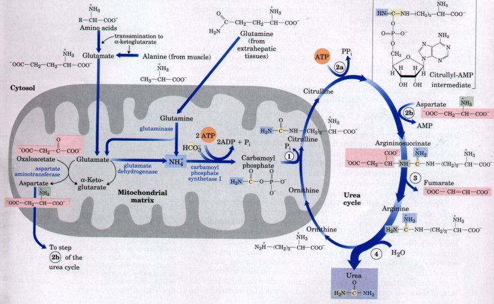
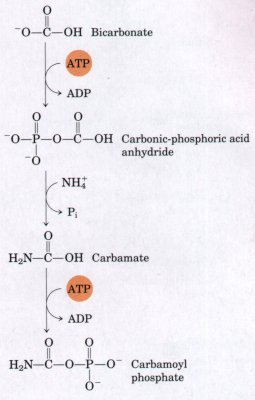
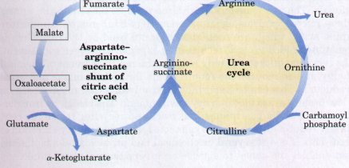
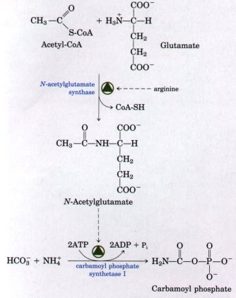
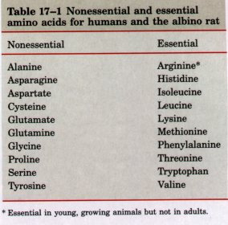
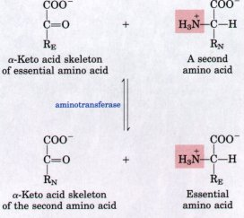
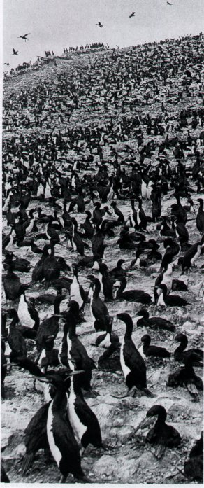

urea + 2ADP3-
+ 4Pi2- + AMP2- + 5H+
urea + 2ADP3-
+ 4Pi2- + AMP2- + 5H+As already noted (Fig. 17-4), most aquatic species, such as the bony fishes, excrete amino nitrogen as ammonia and are thus called ammonotelic animals; most terrestrial animals excrete amino nitrogen in the form of urea and are thus ureotelic; and birds and reptiles excrete amino nitrogen as uric acid and are called uricotelic. Plants recycle virtually all amino groups, and nitrogen excretion occurs only under very unusual circumstances. There is no general pathway for nitrogen excretion in plants.
In ureotelic organisms, the ammonia in the mitochondria of hepatocytes is converted to urea via the urea cycle. This pathway was discovered in 1932 by Hans Krebs (who later also discovered the citric acid cycle) and a medical student associate, Kurt Henseleit. Urea production occurs almost exclusively in the liver, and it represents the fate of most of the ammonia that is channeled there. This pathway now becomes the focus of our discussion.
| Using thin slices of liver suspended in
a buffered aerobic medium, Krebs and Henseleit found that
the rate of urea formation from ammonia was greatly
accelerated by adding any one of three α-amino acids:
ornithine, citrulline, or arginine. Each of these three
compounds stimulated urea synthesis to a far greater
extent than any of the other common nitrogenous compounds
tested, and their structures suggested that they might be
related in a sequence. From these and other facts Krebs and Henseleit deduced that a cyclic process occurs (Fig. 17-10), in which ornithine plays a role resembling that of oxaloacetate in the citric acid cycle. A molecule of ornithine combines with one molecule of ammonia and one of CO2 to form citrulline. A second amino group is added to citrulline to form arginine, which is then hydrolyzed to yield urea, with regeneration of ornithine. Ureotelic animals have large amounts of the enzyme arginase in the liver. This enzyme catalyzes the irreversible hydrolysis of arginine to urea and ornithine. The ornithine is then ready for the next turn of the urea cycle. The urea is passed via the bloodstream to the kidneys and is excreted into the urine. |
 Figure 17-10 The urea cycle. The three amino acids found by Krebs and Henseleit to stimulate urea formation from ammonia in liver slices are boxed. As shown, ornithine and citrnlline can serve as successive precursors of arginine. Note that citrulline and ornithine are nonstandard amino acids that are not found in proteins. |
The urea cycle begins inside the mitochondria of hepatocytes, but three of the steps occur in the cytosol; the cycle thus spans two cellular compartments (Fig. 17-11). The first amino group to enter the urea cycle is derived from ammonia inside the mitochondria, arising by the multiple pathways described above. Some ammonia also arrives at the liver via the portal vein from the intestine, where it is produced by bacterial oxidation of amino acids. Whatever its source, the NH4+ generated in liver mitochondria is immediately used, together with HCO3- produced by mitochondrial respiration, to form carbamoyl phosphate in the matrix (Fig. 17-12; see also Fig. 17-11). This ATP-dependent reaction is catalyzed by the enzyme carbamoyl phosphate synthetase I. The mitochondrial form of the enzyme is distinct from the cytosolic (II) form, which has a separate function in pyrimidine biosynthesis (Chapter 21). Carbamoyl phosphate synthetase I is a regulatory enzyme; it requires N-acetylglutamate as a positive modulator (see below). Carbamoyl phosphate may be regarded as an activated carbamoyl group donor.

Figure 17-11 The urea cycle and the reactions that feed amino groups into it. Note that the enzymes catalyzing these reactions (named in the text) are distributed between the mitochondrial matrix and the cytosol. One amino group enters the urea cycle from carbamoyl phosphate (step 1), formed in the matrix; the other (entering at step 2) is derived from aspartate, also formed in the matrix via transamination of oxaloacetate and glutamate in a reaction catalyzed by aspartate aminotransferase. The urea cycle itself consists of four steps: (l) Formation of citrulline from ornithine and carbamoyl phosphate. Citrulline passes into the cytosol. (2) Formation of argininosuccinate through a citrullyl-AMP intermediate. (3) Formation of arginine from argininosuccinate. This reaction releases fumarate, which enters the citric acid cycle. (4) Formation of urea. The arginase reaction also regenerates the starting compound in the cycle, ornithine. The pathways by which NH4- arrives in the mitochondrial matrix are discussed earlier in the text.
| The carbamoyl phosphate now enters the
urea cycle, which entails four enzymatic steps. Carbamoyl
phosphate donates its carbamoyl group to ornithine to
form citrulline and release Pi (Fig. 17-11, step l ) in a
reaction catalyzed by ornithine transcarbamoylase.
The citrulline is released from the mitochondrion into
the cytosol. The second amino group is introduced from aspartate (generated in the mitochondria by transamination (Fig. 17-11) and transported to the cytosol) by a condensation reaction between the amino group of aspartate and the ureido (carbonyl) group of citrulline to form argininosuccinate (step 2). This reaction, catalyzed by argininosuccinate synthetase of the cytosol, requires ATP and proceeds through a citrullyl-AMP intermediate. The argininosuccinate is then reversibly cleaved by argininosuccinate lyase to form free arginine and fumarate (step 3 ), which enters the pool of citric acid cycle intermediates. In the last reaction of the urea cycle the cytosolic enzyme arginase cleaves arginine to yield urea and ornithine (step 4). Ornithine is thus regenerated and can be transported into the mitochondrion to initiate another round of the urea cycle. As we noted in Chapter 14, enzymes of many metabolic pathways are not randomly distributed within cellular compartments, but instead are clustered (p. 414). The product of one enzyme is often channeled directly to the next enzyme in the pathway. In the urea cycle, mitochondrial and cytosolic enzymes appear to be clustered in this way. The citrulline transported out of the mitochondria is not diluted into the general pool of metabolites in the cytosol. Instead, each molecule of citrulline is passed directly into the active site of a molecule of argininosuccinate synthetase. This channeling continues for argininosuccinate, arginine, and ornithine. Only the urea is released into the general pool within the cytosol. |
 Figure 17-12 The reaction catalyzed by carbamoyl phosphate synthetase I. The formation of carbamoyl phosphate in the mitochondrial matrix is strongly stimulated by the allosteric effector N-acetylglutamate (see Fig. 17-14). Note that the terminal phosphate groups of two molecules of ATP are used to form one molecule of carbamoyl phosphate: two activation steps occur in the carbamoyl phosphate synthetase I reaction. |
The fumarate produced in the argininosuccinate lyase reaction is also an intermediate of the citric acid cycle. Fumarate enters the mitochondria, where the combined activities of fumarase (fumarate hydratase) (p. 458) and malate dehydrogenase (p. 459) transform fumarate into oxaloacetate (Fig. 17-13). Aspartate, which acts as a nitrogen donor in the urea cycle reaction catalyzed by argininosuccinate synthetase in the cytosol, is formed from oxaloacetate by transamination from glutamate; the other product of this transamination is α-ketoglutarate, another intermediate of the citric acid cycle. Because the reactions of the urea and citric acid cycles are inextricably intertwined, together they have been called the "Krebs bicycle."
 |
Fignre 17-13 The "Krebs bicycle," composed of the urea cycle on the right, which meshes with the aspartate-argininosuccinate shunt of the citric acid cycle on the left. Fumarate produced in the cytosol by argininosuccinate lyase of the urea cycle enters the citric acid cycle in the mitochondrion and is converted in several steps to oxaloacetate. Oxaloacetate accepts an amino group from glutamate by transamination, and the aspartate thus formed leaves the mitochondrion and donates its amino group to the urea cycle in the argininosuccinate synthetase reaction. Intermediates in the citric acid cycle are boxed. |
| The flux of nitrogen through the urea
cycle varies with the composition of the diet. When the
diet is primarily protein, the use of the carbon
skeletons of amino acids for fuel results in the
production of much urea from the excess amino groups.
During severe starvation, when breakdown of muscle
protein supplies much of the metabolic fuel, urea
production also increases substantially, for the same
reason. These changes in demand for urea cycle activity are met in the long term by regulation of the rates of synthesis of the urea cycle enzymes and carbamoyl phosphate synthetase I in the liver. All five enzymes are synthesized at higher rates during starvation or in animals on very high-protein diets than in well-fed animals on diets containing primarily carbohydrates and fats. Animals on protein-free diets produce even lower levels of the urea cycle enzymes. On a shorter time scale, allosteric regulation of at least one key enzyme is involved in adjusting flux through the cycle. The first enzyme in the pathway, carbamoyl phosphate synthetase I, is allosterically activated by N-acetylglutamate, which is synthesized from acetyl-CoA and glutamate (Fig. 17-14). N-Acetylglutamate synthase is in turn activated by arginine, a urea cycle intermediate that accumulates when urea production is too slow to accommodate the ammonia produced by amino acid catabolism. |
 Figure 17-14 Synthesis of N-acetylglutamate, the allosteric activator of carbamoyl phosphate synthetase I, is stimulated by high concentrations of arginine. Increasing arginine levels signal the need for more flux through the urea cycle. |
The urea cycle brings together two amino groups and HCO3- to form a molecule of urea, which diffuses from the liver into the bloodstream, thence to be excreted into the urine by the kidneys. The overall equation of the urea cycle is
2NH4+ + HCO3- + 3ATP4- + H2O urea + 2ADP3-
+ 4Pi2- + AMP2- + 5H+
The synthesis of one molecule of urea requires four high-energy phosphate groups. Two ATPs are required to make carbamoyl phosphate, and one ATP is required to make argininosuccinate. In the latter reaction, however, the ATP undergoes a pyrophosphate cleavage to AMP and pyrophosphate, which may be hydrolyzed to yield two Pi.
It has been estimated that, because of the necessity of excreting nitrogen as urea instead of ammonia, ureotelic animals lose about 15% of the energy of the amino acids from which the urea was derived. This loss is counterbalanced by metabolic adaptations in some ruminant animals. The cow transfers much urea from its blood into the rumen, where microorganisms use it as a source of ammonia to manufacture amino acids, which are then absorbed and used by the cow. Urea is sometimes added to cattle feed as an inexpensive nitrogen supplement. The recycling of urea not only reduces the net investment of chemical energy, it also reduces the requirements for protein intake and urine production. This can be important for ruminants that must subsist on a low-protein grass diet in a dry environment. The camel, by transferring urea into its gastrointestinal tract and recycling it like the cow, greatly reduces the water loss connected with the urinary excretion of urea. This is one of several biochemical and physiological adaptations that enables the camel to survive on a very limited water intake.

People with genetic defects in any enzyme involved in the formation of urea have an impaired ability to convert ammonia to urea. They cannot tolerate a protein-rich diet because amino acids ingested in excess of the minimum daily requirements for protein synthesis would be deaminated in the liver, producing free ammonia in the blood. As we have seen, ammonia is toxic and causes mental disorders, retarded development, and, in high amounts, coma and death. Humans, however, are incapable of synthesizing half of the 20 standard amino acids, and these essential amino acids (Table 17-1) must be provided in the diet. Patients with defects in the urea cycle are often treated by substituting in the diet the α-keto acid analogs of the essential amino acids, which are the indispensable parts of the amino acids. The α-keto acid analogs can then accept amino groups from excess nonessential amino acids by aminotransferase action (Fig. 17-15). In this way the essential amino acids are made available for biosynthesis, and nonessential amino acids are kept from delivering their amino groups to the blood in the form of ammonia.| Urea synthesis is not the only, or even
the most common, pathway among organisms for excreting
ammonia. The basis for differences in the molecular form
in which amino groups are excreted lies in the anatomy
and physiology of different organisms in relation to
their usual habitat. Bacteria and free-living protozoa
simply release ammonia to their aqueous environment, in
which it is diluted and thus made harmless. In the bony
fishes (ammonotelic animals), ammonia is rapidly cleared
from the blood at the gills by the large volume of water
passing through these respiratory structures. Although
quite sensitive to NH3, fish are relatively tolerant of
NH4+ . Liver is also the primary site of amino acid
catabolism in fish, and NH4+ produced by transdeamination
is simply released from the liver into the blood for
transport to the gills and excretion. The bony fishes
thus do not require a complex urinary system to excrete
ammonia. Organisms that excrete ammonia could not survive in an environment in which water is limited. The evolution of terrestrial species depended upon mutations that conferred the ability to convert ammonia to nontoxic substances that could be excreted in a small volume of water. Two main methods of excreting nitrogen have evolved: conversion to either urea or uric acid. |
 Figure 17-15 The essential amino acids (those with carbon skeletons that cannot be synthesized by animals and must be obtained in the diet) can be synthesized from the corresponding a-keto acids by transamination. The dietary requirement for essential amino acids can therefore be met by the a-keto acid skeletons. RE and RN represent R groups of essential and nonessential amino acids, respectively. |
| The importance of the habitat in
excretion of amino nitrogen is illustrated by the change
in the pathway of nitrogen excretion as the tadpole
undergoes metamorphosis into the adult frog. Tadpoles are
entirely aquatic and excrete amino nitrogen as ammonia
through their gills. The tadpole liver lacks the
necessary enzymes to make urea, but during metamorphosis
it begins synthesizing these enzymes and loses the
ability to excrete ammonia. In the adult frog, which is
more terrestrial in habit, amino nitrogen is excreted
almost entirely as urea. In birds and reptiles, availability of water is an especially important consideration. Excretion of urea into urine requires simultaneous excretion of a relatively large volume of water; the weight of the required water would impede flight in birds, and reptiles living in arid environments must conserve water. Instead, these animals convert Table Nonessential and essential amino acids for humans and the albino rat Nonessential Essential Alanine Arginine* Asparagine Histidine Aspartate Isoleucine Cysteine Leucine Glutamate Lysine Glutamine Methionine Glycine Phenylalanine Proline Threonine Serine Tryptophan Tyrosine Valine * Essential in young, growing animals but not in adulta. amino nitrogen into uric acid (Fig. 17-4), a relatively insoluble compound that is extracted as a semisolid mass of uric acid crystals with the feces. For the advantage of excreting amino nitrogen in the form of solid uric acid, birds and reptiles must carry out considerable metabolic work; uric acid is a purine (see Fig. 12-1), and the biosynthesis of uric acid is a complex energy-requiring process that is part of the purine catabolic pathway (Chapter 21). On many islands off the coast of South America, which serve as immense rookeries for sea birds, uric acid is deposited in enormous amounts (Fig. 17-16). These huge guano deposits are used as fertilizer, thus returning organic nitrogen to the soil, to be used again for the synthesis of amino acids by plants and soil microorganisms (Chapter 21). |
 Figure 17-16 A view on San Lorenzo Island, one of the guano islands off the coast of Peru. Hundreds of thousands of "gooney" birds nest on these islands, and over the centuries, enormous clifflike deposits of guano, which are largely solid uric acid, have built up. Guano is a valuable fertilizer because of its nitrogen content. |